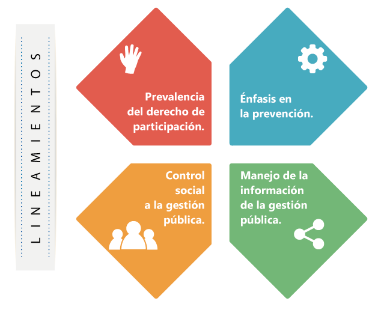

-
¡La Procuraduría en acción!
-
Visita del procurador a España
El procurador viajó a España para encontrarse con los colombianos residentes en ese país.

"Estar fuera del país no los excluye de las políticas públicas que benefician a todos los colombianos": procurador Alejandro Ordóñez a los ciudadanos en España.
-
La Procuraduría al aire
-
Nuestra revista
¡Descarga nuestra revista! Descubre más sobre el trabajo que hay detrás del día a día del procurador y todo un equipo transparente y dedicado que vela por el cumplimiento de las promesas de sus ciudadanos. Representando a la sociedad colombiana y protegiendo sus derechos, incluyendo el derecho a una Colombia en paz.
Términos y condiciones Procurando, Un ¨Pacto para la paz¨, la propuesta de la Procuraduría. -
Galería de imágenes
-
-
Usted tiene qué ver, participe
Con el apoyo de la Procuraduría General de la Nación se fortalece y garantiza el derecho a la participación ciudadana. Si participamos, prevenimos la corrupción y todos ganamos. De este criterio surge la estrategia USTED TIENE QUÉ VER: PARTICIPE, proyecto liderado por la Procuraduría General de la Nación que busca generar una alianza entre los servidores públicos y la ciudadanía, para que los mecanismos de participación ciudadana se conviertan en una forma efectiva de control de lo público. Cuando se previenen hechos que puedan afectar el correcto ejercicio de la administración pública, se reduce la distancia entre los ciudadanos y los servidores públicos y se disminuye el riesgo de corrupción.
Mensajes institucionales de televisión, videos y mensaje radial
¿QUIERES DESCARGAR NUESTROS COLECCIONABLES?
-
Coleccionable 1:
Procuraduría General de la Nación y la participación ciudadana.
-
Coleccionable 2:
Democracia y participación: veedurías ciudadanas.
-
Coleccionable 1:
-
Trámites
- Obtenga el certificado de antecedentes
Certificado de antecedentes - Consulta de procesos disciplinarios
Procesos disciplinarios - Realice sus quejas o denuncias
Quejas y/o denuncias - Escríbanos
- Obtenga el certificado de antecedentes
-
La prevención es mejor que la sanción
La Procuraduría General de la Nación, tiene como principio rector la lucha contra la corrupción y la impunidad, que se hace efectiva con el trabajo de los servidores públicos.
Es necesario tener en cuenta que para que la sociedad funcione bien, de manera equilibrada y democrática se requiere contar con órganos de control. Por esta razón, el Ministerio Público y la Contraloría General de la República se constituyen como órganos de control. Al Ministerio Público le corresponde:
- La guarda y promoción de los derechos humanos.
- La protección del interés público.
- La vigilancia de la conducta oficial de quienes desempeñan funciones públicas.
Para que la sociedad colombiana funcione de manera equilibrada y dentro del Plan Estratégico Institucional “Orden y Rectitud”, la Procuraduría General de la Nación estableció su Misión y Visión, orientadas al efectivo cumplimiento de sus funciones.
Misión
Vigilar el cumplimiento de la Constitución, las leyes, las decisiones judiciales y los actos administrativos; promover y proteger los derechos humanos; defender el interés público y vigilar la conducta oficial de quienes desempeñan funciones públicas; objetivos estos que se logran a través de actuaciones preventivas, de intervención judicial y administrativa y procesos disciplinarios; siendo referentes de eficacia y valoración ética en el ejercicio de la función pública.
Visión
Una Procuraduría cercana al ciudadano, que protege sus derechos, combate la corrupción y la impunidad, vigila y controla la función de los servidores públicos; en aras de eliminar las causas que dan origen a las actuaciones administrativas improcedentes
-
Funciones de la Procuraduría General de la NaciónPreventiva:
Está orientada a anticipar y evitar la ocurrencia de hechos que afecten los derechos de las personas, mediante la detección y advertencia temprana de riesgos en la Gestión Pública. Promueve además el respeto de las garantías de los derechos constitucionales.
Disciplinaria:Tiene como propósito iniciar, adelantar y fallar las investigaciones disciplinarias que se lleven a cabo contra servidores públicos y particulares que ejercen funciones públicas o manejan dineros del Estado.
Conciliación:Promueve la solución de conflictos a través de mecanismos tales como la mediación, la amigable composición, el arbitraje y la conciliación. Es requisito de procedibilidad antes de acudir a las diferentes jurisdicciones, incluida la de lo Contencioso Administrativo. Para este último caso, la Procuraduría es la única instancia que realiza la conciliación.
Intervención:Interviene de manera selectiva como sujeto procesal, en defensa de los derechos y las garantías fundamentales, ante la Jurisdicción Contencioso Administrativa y Constitucional, así como en las instancias de la Jurisdicción Penal, Penal Militar, Civil, Ambiental y Agraria; de familia y laboral, al igual que ante el Consejo Superior de la Judicatura y las autoridades administrativas y de policía.
-
Modelo de la función preventiva de la Procuraduría General de la Nación
Para garantizar su cumplimiento la entidad estableció, mediante la resolución 132 de 2014, un nuevo enfoque, principios y lineamientos que permiten el ejercicio de la función preventiva. Es muy importante tener en cuenta que las funciones misionales que ejerce la Procuraduría General de la Nación incorporan elementos preventivos para garantizar los derechos de los ciudadanos. La función preventiva busca anticiparse y evitar la ocurrencia de hechos, que afecten los derechos.
Está orientada a anticipar y evitar la ocurrencia de hechos que afecten los derechos de las personas, mediante la detección y advertencia temprana de riesgos en la Gestión Pública. Promueve además el respeto de las garantías de los derechos constitucionales.
-
Lineamientos de la función preventiva

Focalización en la garantía de los derechos.
Se concentra en asegurar que se respeten los derechos de las personas.Sólida capacidad anticipatoria.
Se enfoca en la actuación planeada que identifica y valora los riesgos para adoptar medidas que impidan que estos se materialicen, trascendiendo la acción reactiva.Énfasis en la vigilancia y control del cumplimiento de las Políticas Públicas.
Se proyecta hacia el mejoramiento continuo de la administración estatal en términos de pertinencia, economía, eficiencia y eficacia de las Políticas Públicas.Generación de valor en el sector público.
Se orienta hacia la contribución del éxito de la función pública.Gestión y análisis de la información.
Se encamina a la generación y análisis de información de la Gestión Pública con el propósito de valorar anticipadamente los riesgos que puedan afectar su cumplimiento. -
Escenarios y tipos de actuación del modelo de gestión de la función preventiva
Los escenarios y tipos de actuación explican cómo se debe actuar preventivamente en la Procuraduría General de la Nación frente a las diferentes situaciones que se pueden presentar en la Gestión Pública.

Quiénes tienen qué ver con el modelo de gestión de la función preventiva

-
La participación ciudadana y la función preventiva
La participación es eje de la democracia y la garantía de hacer parte de las decisiones que nos afectan. Sin participación no es posible la democracia.
El propósito de la política de participación de la Procuraduría General de la Nación es institucionalizar la relación con los actores sociales con el fin de convertir su conocimiento y experiencia en insumo básico del Sistema Integral de Prevención.

Porque todos tenemos qué ver, recuerde:
- La Procuraduría General de la Nación apoya y garantiza el derecho a la participación ciudadana.
- La participación ciudadana fortalece la función preventiva de la Procuraduría General de la Nación.
- El apoyo a la participación ciudadana se enmarca en la función preventiva de la Procuraduría General de la Nación.
- Ciudadanos e instituciones participan de manera conjunta para fortalecer la Gestión Pública.
- Los ciudadanos tienen derecho a acceder a información veraz y oportuna para la vigilancia de la Gestión Pública.
OBJETIVOS
- Articular
Las acciones de las dependecias de la entidad en torno a los mecanismos y a las instancias de participación y control social. - Fortalecer
Las capacidades de la ciudadanía y sus organizaciones y las herramientas de control social en la Gestión Pública. - Integrar
Las acciones preventivas de la entidad con los mecanismos de participación ciudadana y control social; las organizaciones sociales, la ciudadanía y la administración pública.